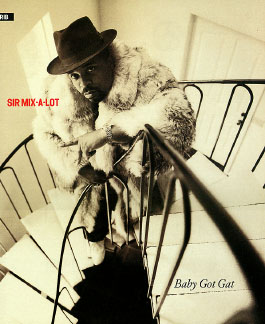

Before Mason Runs: MasonX::Interp::WithCallbacks
- Another module for doing pre-processing with Mason.
- This one subclasses a Mason core object.
- Processing is done before your component is called.
- Transparently integrates with Mason.
PerlModule MyApp::Callbacks
PerlModule MasonX::Interp::WithCallbacks
PerlSetVar MasonInterpClass MasonX::Interp::WithCallbacks
SetHandler perl-script
PerlHandler HTML::Mason::ApacheHandler
- Callbacks are defined in modules:
package MyApp::Callbacks;
use base qw(Params::Callback);
__PACKAGE__->register_subclass( class_key => 'callbacks',
default_priority => 2 );
- Callbacks are triggered by form fields:
<input type="submit" name="callbacks|login_cb" />
- MasonX::Interp::WithCallbacks sees the class key "callbacks" and looks for a login method:
sub login : Callback
{
my $self = shift;
my $params = $cb->params;
my $session = MyApp::session();
my $user =
Rapport::User->new
( email_address => $params->{email_address} );
# Check that $user is an object,
# and that the password is correct ...
push @{ $session->{messages} }, 'Login successful.';
$self->_set_user_cookie($user);
$params->{redirect_to} ||= '/';
$self->redirect( $params->{redirect_to} );
}